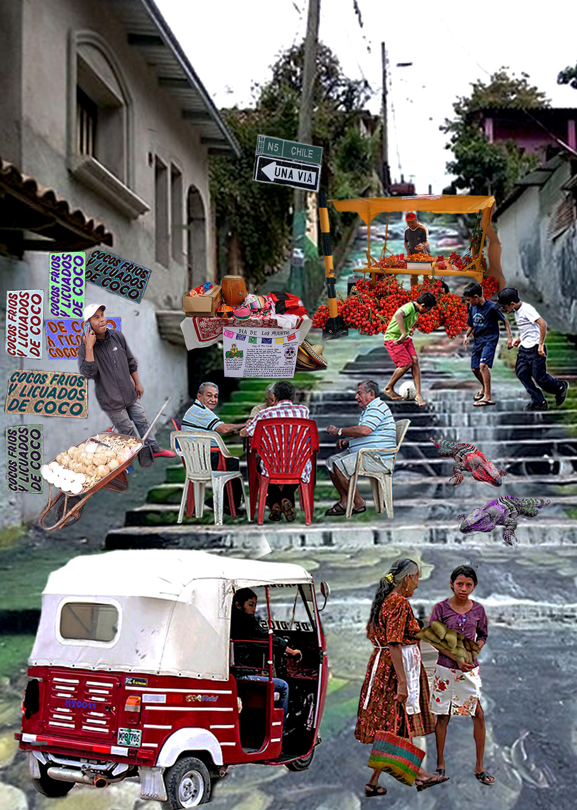
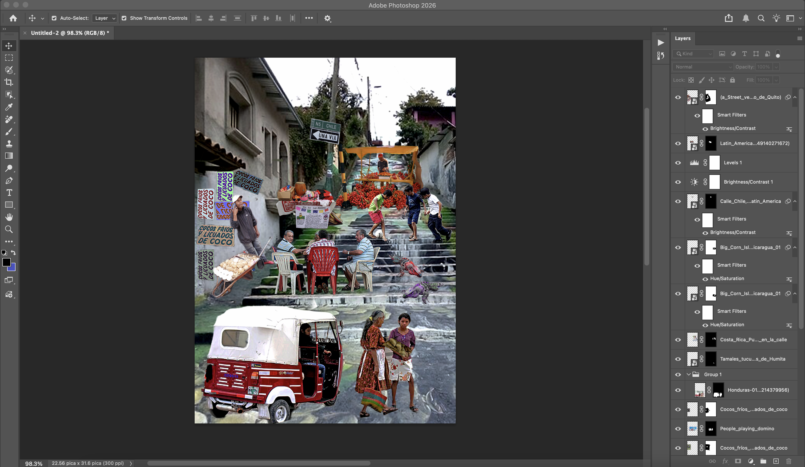

Where the Heart Belongs

photomontage.jpg

montagework.jpg (PSD screenshot with layers panel expanded)
My roots and my culture will always be very important to me. I don't carry them with me just because they are part of my ethnicity, but by choice, showing how proud I am to have been born and raised in Latin America. Growing up, we learned values from home, and Latin America, as my home, taught me loyalty and resilience. Since living in a country that isn't mine, I've heard negative comments about my culture. At first, I felt angry, but over time I began to feel sadness and also empathy, because many people don't understand how meaningful it is to grow up seeing adults play dominoes on the street, go buy fruit on the street, get in a "moto-taxi" or play soccer with friends. Growing up in Latin America is one of the greatest gifts life gave me because it taught me to create hope even when it feels like there is none. Even when I forget where I come from, my heart always reminds me through my actions and the values I practice every day.
To create my photomontage, I wanted to include specific things I grew up seeing that represent my culture. I started by adding images from Wikimedia Commons in separate layers. I used the Object Selection Tool selecting each subject and then applied masks to remove the backgrounds, also using Select and Mask for more precision or brush tool, white to remove some areas and black to bring it back. After that, I worked with adjustment layers and masks to create creative blending, adjusting brightness and contrast because some images were dark or had low contrast so I wanted to adjust them to give them more focus and hue/saturation to give some elements different colors and not be repetitive. Finally, I added an adjustment layer with Levels and Brightness/Contrast to unify the lighting and contrast on the entire composition.